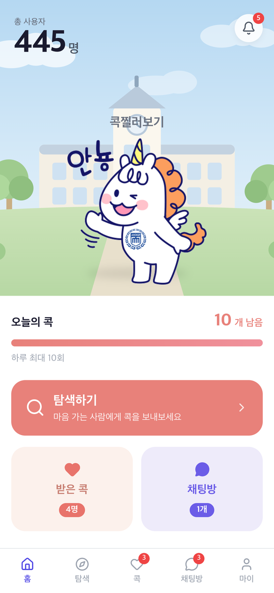
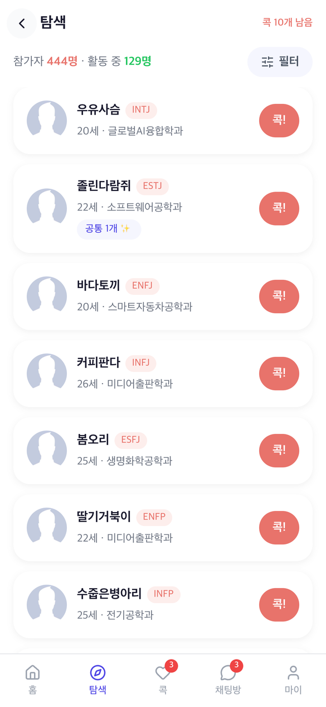
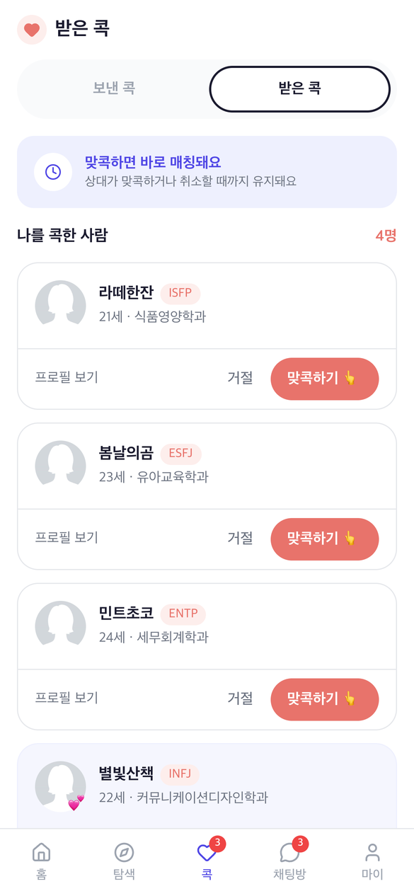
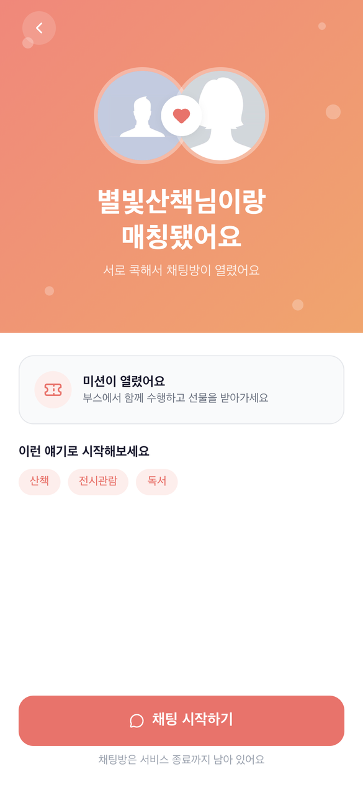
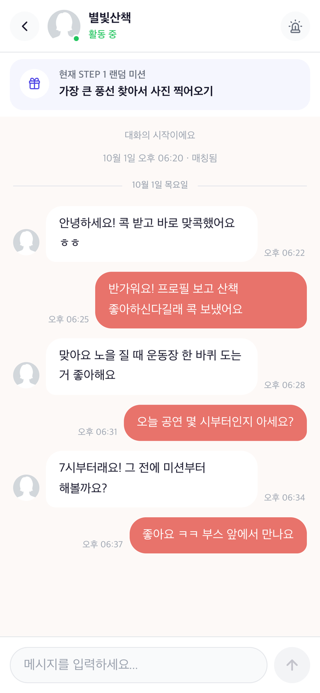
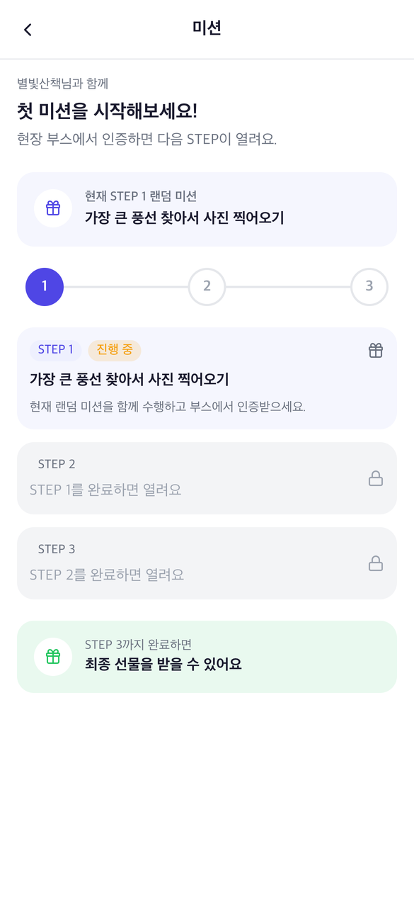
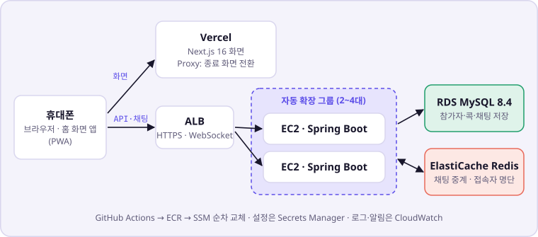
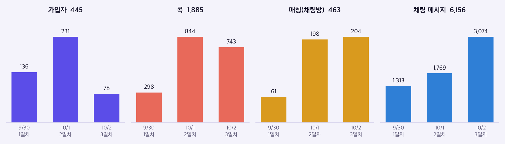

콕찔러보기
서로 콕을 보내 매칭되면 채팅방이 열리는 소개팅 서비스입니다. 축제 3일 동안 실제로 운영했고, 445명이 가입했습니다. 저는 백엔드 API와 실시간 채팅, AWS 인프라와 배포, 부하 테스트와 운영을 맡았습니다.
화면






실제 운영과 같은 규모의 가상 데이터로 찍었습니다. 실제 참가자 화면은 개인정보라 싣지 않았습니다.
구조

규모에 비해 큰 구성입니다. 처음 운영하는 서비스였고, 요구는 "3일 행사 중 멈추지 않을 것"이었는데 인프라 비용은 지원받지 못했습니다. 그래서 개인 AWS 계정의 무료 범위 안에서 서버 2대를 가용 영역 두 곳에 나눠, 한 대가 고장 나도 다른 한 대가 버티게 했습니다. 날짜를 나눠 받는 식으로 요구사항에서 트래픽을 나눌 수 없는 서비스라, 몰릴 때를 대비해 최대 4대까지 자동 확장도 두었습니다. DB는 무료 플랜에서 RDS를 가용 영역 한 곳에만 둘 수 있어 한 대로 두고, 그 한 대에 걸리는 부하를 줄였습니다. 행사 내내 서버는 2대로 충분했습니다.
서버가 2대라 채팅은 Redis Pub/Sub로 모든 서버에 전달합니다. 메시지 원본은 MySQL에 있고, 전달을 놓친 메시지는 화면이 이력을 다시 불러 채웁니다. 누가 접속 중인지는 Redis에 90초짜리 기록으로 남겨서, 서버가 죽어도 기록이 저절로 지워지게 했습니다.
한 일
탐색 목록이 느렸다k6, performance_schema · #129 #131 #133 #135
행사 나흘 전, 참가자 900명과 채팅 450명을 흉내 낸 부하 테스트에서 응답이 느려지기 시작했습니다. 900명은 실제 이용 인원이 아니라 시험 조건입니다. DB 연결 풀이 꽉 차 있어서 처음엔 풀을 서버당 10개에서 20개로 늘렸는데, 거의 나아지지 않았습니다. 실제 한계는 서버 CPU였고, 요청이 연결을 쥔 채 CPU를 기다리느라 풀이 금방 다시 찼던 겁니다. 풀은 되돌리고 자동 확장을 켰더니 서버가 4대까지 늘었습니다.
서버를 더 늘리면 다음 한계는 DB 한 대였습니다. 측정하는 동안만 performance_schema를 켜서 쿼리별 DB 시간을 재 보니, 참가자 전원을 읽는 탐색 목록 하나가 DB 시간의 33%, 트랜잭션을 여닫는 명령이 약 25%였습니다. 탐색 목록은 서버 메모리에 10초 보관하고, 만료되면 요청 하나만 DB를 다시 읽게 했습니다. 트랜잭션 설정 명령과 활동 시각 갱신도 줄였습니다.
| 같은 조건(900명 + 채팅 450명) | 처음 | 목록 보관 뒤 | 명령 줄인 뒤 |
|---|---|---|---|
| 응답 p95 | 0.98초 | 0.19초 | 0.07초 |
| DB CPU | 80.1% | 70.4% | 55.9% |
| 요청 1건당 DB 시간 | 6.2ms | 3.9ms | 2.9ms |
| 자동 확장으로 늘어난 서버 | 4대 | 3대 | 2대 |
대신 새 참가자나 바뀐 프로필이 다른 사람 화면에는 최대 10초 늦게 보입니다.
콕 한도 잠금에서 줄이 생겼다MySQL 행 잠금, 격리 수준, Testcontainers · #139
행사 날에는 전체 콕 수에 한도가 있어서, 한도를 넘지 않게 잠금 행 하나를 두었습니다. 그러자 모든 콕이 그 한 줄에 섰습니다. 초당 50건에서 p95가 2초 가까이로 무너졌고, 기다리는 요청이 DB 연결을 쥐고 있어서 콕과 상관없는 콕 목록 조회까지 밀렸습니다. 잠금 대기를 2초마다 떠서 세 보니 453건 중 448건이 그 잠금이었고, DB CPU는 24%였습니다. DB가 바쁜 게 아니라 잠금을 오래 쥐고 있었던 겁니다.
실패할 요청은 잠금을 잡기 전에 걸러지도록 검사 6가지를 잠금 앞으로 옮기고, 건수를 세는 쿼리에 sent_at 인덱스를 넣었습니다. 잠금을 얻은 뒤 센 건수가 앞선 전송을 모두 보도록 격리 수준은 READ COMMITTED로 바꿨습니다. 그리고 서버당 동시에 4건만 잠금에 들어가게 해서, 나머지 DB 연결은 다른 API가 쓰게 남겼습니다.
| 초당 콕 | 처음 p95 | 검사를 앞으로 옮긴 뒤 p95 |
|---|---|---|
| 50건 | 1.99초 | 203ms |
| 60건 | 4.16초 (측정 중단) | 91ms |
| 90건 | - | 4.72초 (측정 중단) |
| 초당 90건, 중앙값 | 동시 4건 제한 전 | 제한 뒤 |
|---|---|---|
| 콕 전송 | 2.1초 (측정 중단) | 590ms |
| 콕 목록 조회 | 2.0초 | 21ms |
운영 환경에 셋째 날 최악의 데이터(콕 18,000행)를 넣고 쟀습니다. 제한 뒤 초당 90건에서는 27%가 혼잡 응답(429)을 받았습니다. 한도를 넘지 않는지는 실제 MySQL에서 다섯 자리를 열 쌍이 다툴 때 정확히 다섯 쌍만 성공하는지로 확인했습니다.
행사 중에 배포해야 했다GitHub Actions, ECR, SSM · #89
처음 배포 스크립트는 :latest 이미지를 받고 ALB가 정상이라고 하면 넘어갔습니다. 이러면 두 서버가 서로 다른 이미지를 받거나, 새 프로세스가 죽었는데도 배포가 통과할 수 있었습니다. 스크립트는 중간에 한 줄이 실패해도 끝까지 실행됐습니다.
테스트를 통과한 뒤에만 이미지를 만들고, 그 이미지의 digest를 두 서버에 그대로 넘기게 바꿨습니다. 서버를 한 대씩 교체하면서, 실행 중인 이미지가 방금 배포한 digest인지와 헬스체크가 UP인지 확인해야 다음 서버로 넘어갑니다. 이렇게 행사 중에 서비스를 내리지 않고 5번 배포했습니다. 다만 컨테이너를 멈추기 전에 ALB에서 서버를 먼저 빼는 단계가 없어서, 배포하는 순간마다 연결이 끊겨 모두 381건이 실패했습니다.
첫날 푸시 알림이 나가지 않았다로그 추적, 회귀 테스트 · PR #154
9월 30일 오후 2시 13분부터 밤 11시 41분까지 푸시 발송 257건이 실패했습니다. 콕과 채팅은 정상으로 처리돼서, API 응답만 봐서는 드러나지 않았습니다.
로그를 따라가 보니 원인은 제가 AI로 만든 다른 수정이었습니다. 그 수정에서 암호화 제공자를 등록하는 코드가 알림을 만드는 코드보다 뒤에 실행되게 바뀌어 있었는데, 리뷰할 때 변경 목적만 보고 넘겨서 그 줄을 놓쳤습니다. 테스트는 제공자를 미리 등록해 둔 상태로 돌아서 이 오류를 잡지 못했습니다.
순서를 바로잡고, 제공자가 없는 상태에서 첫 발송을 재현하는 테스트를 더해 10월 1일 0시 17분에 배포했습니다. 이후 같은 오류는 없었지만, 첫날 나가지 못한 알림은 다시 보낼 수 없었습니다. 이 일 뒤로는 AI가 만든 변경을 diff 전체를 읽고 리뷰합니다.
운영 결과
| 항목 (9/30 ~ 10/2) | 값 |
|---|---|
| 가입 | 445명 |
| 매칭 | 463건 |
| 채팅 메시지 | 6,156건 |
| 서버가 처리한 요청 | 44만 건 |
| 1분 단위 p95의 중앙값 | 28ms |
| 서버 오류 (배포 시각 제외) | 8건 (0.002%) |

테스트는 백엔드 455개(실제 MySQL 통합 테스트 포함), 프론트엔드 94개입니다.
남은 한계
- 배포 순간 끊긴 연결 381건. ALB에서 서버를 먼저 빼고 연결을 비운 뒤 교체해야 합니다.
- 탐색 목록은 서버마다 따로 보관해서 서버끼리 최대 10초 어긋납니다.
- 콕 처리 한계 초당 60~90건은 콕만 보낸 측정입니다. 다른 요청이 섞이면 초당 46~56건이었습니다.
- 혼잡 응답(429)을 받은 사용자에게 보여 줄 안내 문구가 없었습니다.